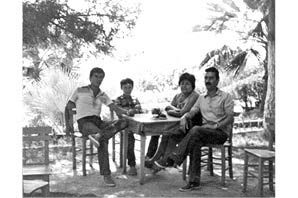
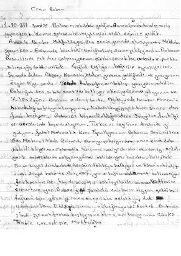
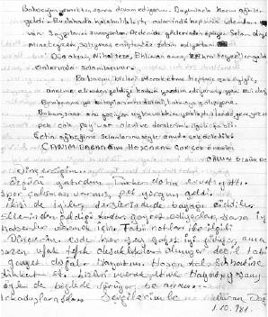

“Ömrümün Sonuna Kadar Babamla Kaçak Buluşacağımızı Düşünüyordum.”
Özgür Doğu9
Babam Dinçer Doğu, yasal bir siyasi parti olan Türkiye İşçi Partisi’nin yöneticisiydi. Yaklaşık olarak 1981 yılından 1983 yılına kadar muhtelif cezaevlerinde tutuklu kaldı. Nihai karardan önce ara bir kararla tahliyelere hükmetti mahkeme ve babamın da içinde olduğu tutuklular cezaevinden çıktı.
Bir süre sonra mahkeme kararı kesinleşti ve babam, 12 yıl ceza aldı. Babam ve birkaç arkadaşı nihai karardan sonra tekrar cezaevine dönmediler. Ta ki 1991 senesinde 141. madde kalkıp dava ve sonuçları düşene kadar babam, ülke içinde muhtelif illerde kaçak yaşadı. Elbette o günlere dair birçok şey hatırlıyorum ama en net hatırladıklarım; Selimiye Kışlası, Davutpaşa Kışlası, Hasdal Kışlası, Metris Cezaevi, beton ve demir. Neyse ki farklı cezaevleri de olsa, hep İstanbul’da kaldı babam. Bir de öyle bir zorluğu var bu işin. Şanslı sayılırız o anlamda.
Darbenin Öncesi ve Sonrası
Çok mutlu, çok keyifli, çok heyecanlı bir aile ortamımız vardı çünkü babamın çok hızlı bir hayatı vardı. Sürekli parti geceleri, dayanışma eylemleri, grevler, konserler... Grev çadırlarında, gösterilerde büyüdük diyebilirim. Babam aynı zamanda Kimya-İş Sendikası’nın da başkanlığını yapmıştı. Evimiz sürekli dolup dolup taşan, sürekli toplantıların, keyifli muhabbetlerin yapıldığı bir evdi. Bir sürü ağabey ve ablanın gelip gittiği, tıpkı Türkiye’nin mikro ölçekli bir örneği gibiydi diyebiliriz. Sokaklar cıvıl cıvıldı, bizim ev de öyleydi. Hiç bitmeyen bir sofra, toplantı ve sohbet halleri... Bir çocuk için aranıp da bulunamayacak bir ortam anlayacağınız. Biz de o ortamda çok politik büyüdük. 6-7 yaşında, Türkiye’nin atom bombası var mı yok mu? Kapitalizm-sosyalizm meselelerini konuşurduk, emperyalizm tartışması yaptığımızı bile hatırlıyorum.
Ama bir karabasan geldi ve bütün bunlar son buldu.
İnanılmaz değişti her şey. Bir kere hem fiziksel olarak değişti hem ekonomik olarak değişti. İnsan görünürlüğü bir anda yok oldu. Kimse kalmadı ortalıkta, en başta babamız gitti. Karanlık bir dönem, sürekli olarak bir hayatta kalma çabası başladı. Babamızı bir şekilde oradan kurtarma isteği... ağabeyimle hayallerimizde hep o vardı: babamı oradan nasıl kurtaracağız? Ağabeyim o zaman 14 yaşındaydı, ben 10 yaşındaydım. Şu anda 42 yaşındayım, hayatımın en büyük değişimidir diyebilirim. Ondan sonra hiçbir şey eskisi gibi olmadı.
Babamın durumunu biliyordum, her şeyi anlıyordum ama anlamak da istemiyordum. Çünkü dönmeme ihtimali var, duyuyoruz, görüyoruz. Farklı siyasetlerden komşularımız var; ağabeylerimizin, ablalarımızın yurtdışına gittiğini ve ailelerinin uzun süre haber alamadıklarını biliyoruz. Çok yakınlarımız vardı mesela, mektup gelmiyor, mesajlar iletilemiyor. Biz en azından nerede olduğunu biliyorduk. Mesela şöyle bir şey vardı: İlk Selimiye görüşmesini hatırlıyorum. Sabah 07:00 gibi çıkıp gittik, orada top sahası vardı. Top sahasında yüzlerce belki binlerce aile ve çocuk bekliyoruz. Nizamiye kapısının önünde, bir anne feryat etti, cemse miydi ring aracı mıydı hatırlamıyorum şimdi. Anne, oğlunun siluetini, burnunu, gözünü gördü ve büyük bir sevinç çığlığıyla “Çok şükür” dedi oysa çocuk zincirlerle getirilmişti. Birçok insandan haber alınamıyor. Şubede yok, karakolda yok, hiçbir yerde, hiçbir cezaevinde bulunamıyor. Anne çocuğunun izini bulmuştu ve derin bir sevinç çığlığı atmıştı.
O zaman demiştim ki, en azından babamın adresi belli, nerede olduğu belli, kaybedilmemiş, yok edilmemiş, öldürülmemiş, bizden çok daha zor durumda olanlar vardı. Özellikle gençlik hareketlerinde yer alanlar çok kötüydü.
Anneme, partinin annesi derlerdi. Öyle kadınlar vardır ya, işin politik yanına çok bulaşmamış ama hep toparlayıcısı olmuş, Türkiye’de kültür de böyledir, genelde erkek öndedir. Bizim Valide Hanım da öyleydi. Annemin parti yöneticiliği yoktu açıkçası ama tabii ki Türkiye İşçi Partili ve solcu olarak tanırlardı kendisini. İyi ki öyle olmuş yoksa her ikisi birden gitse çok kötü olurdu. Annemin çok cefakâr bir kadın olduğunu söyleyebilirim, hem işe gidip hem bize bakıp, hem okutup hem evi geçindirip, hem cezaevi sürecinde ülser hastası babama haftanın iki-üç günü torbalarla yemek götürüp hem de kaçaklık yıllarında babamın peşinden o dönem hangi şehirdeyse o da cuma günleri iş çıkışı babamın yanına giderdi. Çoğu zaman giderdi, gidişini bilirdik; fakat hangi şehre gittiğini bilmez ve sormazdık.
Cezaevi sürecinde babam içerideyken, annem çalışıyor, bize de dayım, teyzem, anneannem yakın ilgi gösteriyordu. Aile fertleriyle aynı semtte olmamız bizim için büyük şanstı. Bir de babamın arkadaşlarından birkaçı sürekli eve gidip gelir, ilgilerini eksik etmezlerdi. Ekonomik anlamda berbat bir duruma girdik. Evet bir dayanışma vardı ama bu daha çok moral ağırlıklıydı. Herkes belli bir standartta yaşıyordu. Ne yazık ki kimsenin kimseye çok bir faydasının olmadığı bir dönemdi diyebiliriz. Yalnızca moral anlamında, buradayız anlamında bir destekti.
Aç kalmadık ama sıkıntılı bir dönemdi. 13 yaşından beri çalışıyorum. Yakında emekli oluyorum bu sebepten dolayı. Avantajlarından bir tanesidir bu. Lise hayatımda da, üniversitede de sürekli çalıştım. Üniversiteyi çok uzun sürede bitirebildim. İki kardeşiz. Ağabeyim de öyledir. O da 10 küsur senede bitirmiştir üniversiteyi.
Çocukluğum harika bir kooperatif sitesinde geçti. Kimya-İş, babamın ve arkadaşlarının yaptığı bir kooperatifti. Orada ağırlıklı olarak, kimya iş kolunda çalışan işçiler ve farklı siyasetlerden de olsa, sol geleneklerden gelen insanlar otururdu. Biz mesela, 7-8 yaşında, “bizden, bizim ekipten” diye tanımlardık insanları. Doğal olarak 12 Eylül geldiğinde “aa ne oldu şimdi” diye şaşırdığımız bir durum olmadı. Hatta bize karşı “kötülük” olarak yapıldığının fazlasıyla farkındaydık.
Fakat çok manidardır, bence bu işin psikolojik boyutuyla da ilgili bir şey, Ertürk Yöndem’in yaptığı programlar vardı. O dönemde hem PKK olayları hem Türkiye’deki cezaevlerinden itirafçıların pişmanlık röportajları ve Tariş direnişinden görüntüler falan TRT’de sürekli jenerik yapılıyordu. Ben hatırlıyorum, bütün bu güya uyanıklığıma, bilinçli halime rağmen, “Ya bizim pederler de neler yapmış, ya acaba böyle şeyler yapmış mı?” diye sorgulamıştım çok kısa bir süre de olsa... Ciddi bir dezenformasyon, psikolojik harp yapıyorlardı ve onu yaşayan ve ona maruz kalan herkes doğal olarak keşke bu işlere bulaşmasalardı diyorlardı. Dünyada çok başarıya ulaşmış ender çalışmalardan biridir diye düşünüyorum. Babasını oğluna, oğlunu babasına terörist diye tanıtan bir operasyondu.
Darbe sürecinde ve sonrasında aynı sitede yaşamaya devam ettik. 188 daireden oluşan, herkesin birbirini çok iyi tanıdığı, babamın saygı ve hürmet gördüğü bir yerdi. Ee biz de çok sevilen çocuklardık. Hayatımızdaki diğer kötülüklere rağmen en olumlu şey o kooperatifin içinde büyümemizdi. Sitenin kocaman bir bahçesi vardı. Okuldan gelir, bütün gün bahçede oynardık. Akşama annem işten gelince yemek için toplardı bizi. O yüzden dağılmıyorduk hiç. Bir sürü arkadaş, bir sürü tanıdık, akraba vardı, çok keyifliydi. Bir tür köy gibiydi orası. İstanbul’un içinde korunaklı, kendi içinde davranış kuralları, kültürü olan bir köy gibiydi.
Darbe sonrası herhangi toplumsal bir baskı ve dışlanma yaşamadık, çok şanslıydık. Hatta övünerek ve gururla dolaşırdık. Büyüklerimizin sürekli olarak bir kollama, göz kulak olma durumu vardı. Hani “babası yok” demiyorlardı ama bunu hissetiriyorlardı bize. Hoşlarına gitmeyen bir durum olduğunda “Hareketlerine dikkat et!” diyerek beni hizaya çeken iki ağabeyimizi hatırlıyorum. 16 yaşında mahallemizden bir kız arkadaşla ilk kez flört ediyordum, flört denirse artık, işte oturup sohbet ediyoruz mahallede. Ağabeyler beni kenara çekip, “Dikkat et davranışlarına, hani kızın babası sorun çıkarırsa başımız belaya girmesin!” demişlerdi. Bir anlamıyla yakın takip söz konusuydu.
Babamı İlk Ziyaretim
İlk görüşmeye gittiğim yer Selimiye Kışlası’ydı. İlk görüş anı çok keyifsiz bir andı. Görüş günü sabah giriyorsunuz sıraya, çok düzensiz, gayri organize bir durumda isminizi yazdırdıktan sonra giriyorsunuz görüşmeye ama bu 6-7 saat, bazen 8 saati buluyor. Akşama kadar çayırın üstünde bekliyorsunuz. Perişan bir durum. Tepede sıcak, susuz, yemeksiz…
Saatler sonra bizi içeri aldılar. Aramalar, kontroller, evraklar, kâğıtlar berbat bir gerginlik; umutsuz, karanlık bir bekleyiş. Nereye, kimle nasıl gittiğimizi bilemeden askerlerin eşliğinde koridorlardan geçtik. Çok kalın duvarlar hatırlıyorum. Orası dehşet bir yerdir. Sonra bir tel örgüye geldik. Kocaman bir salonu enlemesine iki sıra tel örgüyle ikiye bölmüşlerdi. Bekliyoruz. Karşıdan getirdiler tüm tutukluları. Yaşadığım en yıpratıcı andı. Benim babam cezaevine girmeden önce pala bıyıklı, saçları dalgalı bir adamdı. Bir geldi, saç yok, bıyık yok, cezaevine girmeden önce de bir tüberküloz vakası atlatmıştı, 40-50’li kilolara düşmüştü, sırım gibi bir adamdı. Saçsız, bıyıksız ilk kez görüyordum babamı. İlk kez onu bizden aldıklarının bu kadar farkına varmıştım. Ben dizlerimin üzerine çöküp ağlamaktan baygınlık geçirdiğimi hatırlıyorum. Annem ve ağabeyim benimle uğraşmaktan görüşme yapamadılar. Çünkü sürekli ağlıyorum. Kabul edemiyorum. Birincisi, babam niye orada; ikincisi niye saçlarını kesmişler, niye bıyıklarını kesmişler? Tanınmaz bir hale getirmişler. Açıkçası esir almışlar babamı. Bizim ilk 15 dakikamız böyle geçti. Hatta eve kadar da fenalık geçirerek, ağlayarak, hıçkırarak gelmiştik. Hiç kabul edememiştim.
Fakat yavaş yavaş alıştım sonraki görüşlerde. Genellikle cuma günleriydi görüşler ve ailecek giderdik. Tabii ağabeyim delikanlı olmaya başlayınca ekmeye başladı bizi. Okul var, ders var, sınav var. O da çok kötü bir dönem, ergenlik dönemindeydi. Annemle biz hiç hafta sektirmeden her görüşe gitmişizdir. Her hafta bir mektup, bazen iki, sınavlara ve Fenerbahçe’nin durumuna göre, haftanın olaylarını içeren mektuplar yazar gönderirdim. Annem tezgâhın önünde yemek pişirirken ben de arkasındaki yemek masasında çizgisiz dosya kâğıdının altına çizgili şablon koyarak yazardım. Çünkü babam mektubun biçimine, özenine çok önem verirdi. Yazdıklarımı gelecek görüşte düzeltir, şunu böyle yazmışsın, oradaki “de” ayrı yazılacak vb. uyarılar yapar, hatta el yazımı eleştirirdi. Ayrıca mektuptaki her cümleyi yazmadan önce anneme söyler öyle yazardım zira gelen ve giden tüm mektuplar okunarak teslim ediliyordu.
Selimiye Kışlası çok uzaktı bize. Ancak babam Davutpaşa Kışlası’na alınınca zorluk bir derece azaldı. Davutpaşa Kışlası nispeten daha tercih edilir bir yerdi. Merter’de oturuyoruz ve Davutpaşa Kışlası eve yürüyerek 45 dakika. O zamanlar minibüs yok o hatta. Her cuma sabahı görüşe giderdik yürüyerek. Tabii okul yok o gün. Ya da yetişirsek son bir iki derse girebiliyorum. Yine tarlaya yayılırdık. Kocaman bir sahra çadırı kurulur Ayvalıdere’ye doğru. Orada kayıt işlemleri vs. yapılır. Nizamiye girişinde çok güzel bir kantini vardı, bildiğiniz asker kantini, hoş yanları da vardı: Orada işte salçalı tost yiyip sonra cemseye binmek gibi. Çünkü cemseyle yukarı çıkartılıyoruz. Bunlar işin eğlenceli yanıydı. Artık ağlama nöbetleri de bitmişti. Alışmıştık duruma, kanıksamıştık. Ondan sonra ağladığımı hiç hatırlamıyorum. Haftada bir görüşüyoruz. Başçavuş iyi günündeyse “Sarılabilir miyiz?” diye sorardık. Metris gibi değildi orası. Kışladan bozma bir cezaevi çünkü. Haydi falan deyip bizi babamın yanına salardı. 15 dakikayı sarılarak, öpüşerek geçirirdik. Başçavuş iyi gününde olursa tabii, olmazsa yok. Onun ağzından çıkan bir emre bakardı. Sonraki bütün ziyaretler nispeten keyifli geçti. Sorun yaşamadık. Böyle yoğun bir hüzün yoktu açıkçası. Normalleşmişti. Yaşıtlarımızla oyun oynayarak beklerdik. Pınar Selek, Bekir Yenigün’ün oğlu İlker ve şu an anımsayamadığım bir sürü yaşıtım, nizamiye önü bekleme arkadaşlarımdı ve hep beraber beklediğimiz için oynayarak geçiriyorduk zamanı. Hatta askerlerle bile top oynadığımızı hatırlıyorum. Öyle bir durumumuz vardı.
Görüşme için çok sınırlı bir zaman vardı. Başçavuşun düdüğüyle son bulurdu. Nasılsın iyi misinle başlayan, nasıl gidiyor dersler, bu hafta maç seyrettin mi, top oynadınız mı, kim yendi ile devam eden konuşmalardı. Onun dışında gündelik hayatta neler yapılıyor, evdekiler nasıl diye konuşurduk. Çünkü akrabalar göremiyor, soyadı tutmadığı için giremiyorlardı görüşlere. Anneanne, dede muhabbeti, teyzelerle, dayı muhabbeti. Sıradan şeyler. El sallayarak gönderirdik onları. Yaşımız da küçük olduğu için baba nasılsın, iyi misin, burada iyi bakıyorlar mı size, politik bir baskı var mı içeride, durumunuz nasıl diye de sormayı hiç aklımıza getirmedik. Belki büyük olsaydık bu sohbetleri yapardık ama…
Babam Kaçıyor
1983 senesinde sınıfta kalmıştım. Okulu da çok kötü etkiliyordu bu durum. Haftanın bir günü derslere giremiyorum ya da eksik giriyorum, kafada sürekli keyifsiz bir durum var. Ders de çalışamıyoruz. Babam içerideyken 1.5-2 sene sürekli baskın yedik. Kendisi içeride, cezaevi belli, nerede tutuklu olduğu, adresi belli; fakat neredeyse 15 günde bir gelirlerdi gecenin 3’ünde babamı aramaya. DİSK yöneticiliği de yapmıştı babam, bir yerde yaptığı bir konuşmadan dolayı bir masa arıyor ama öbür masa çoktan tutuklamış zaten. Biz gecenin 3’ünde kalkarız, kasklı, silahlı adamlar evin içine girer. Ranzamız vardı, in aşağı derler, dizerler bizi. 3 kişilik bir aile, saat 4’e 5’e kadar sorarlar, nerede babanız? Anlatırız, cezaevinde diye. Telefon yok, bilgisayar yok, adamları ikna edip gönderene kadar bir hal oluruz. Hatta annem “Oturun çay için istiyorsanız, sabah olsun bir yerden telefon açın, öğrenin adamın nerede olduğunu” derdi. TİP yasal bir parti olduğu için, aşağılayıcı, tahkir ve tezyif edici ifadelerden kaçınırlardı ama yine de silahlı çelik yelekli kasklı ve tabii ki sevimsiz adamlardı. Çocuğuz ve sabahın köründe gözümüzü açınca tüfekli adamlarla karşı karşıyayız. Thomson derdik o zaman, bilmiyorduk o silahlar neydi ama filmlerden görmüşüz.
Taciz ediyorlar açıkça bizi. O süreçte teyzemlerde, dayımda kaldık bir süre. Önce büyük teyzeme, sonra diğer teyzeme gidiyoruz. Farklı evlerde yatıp kalkıyorsunuz, ders mers çalışamıyorsunuz. Kitap defter hak getire. Orta ikide sınıfta kaldım. O sene de bütünleme diye bir şey yok, beklemeye kalıyorsunuz. Okul olmayınca ben de bir deri atölyesinde çıraklığa başladım. Keresteciler sitesinde 20-25 kişinin çalıştığı bir atölye. Temizlik, çay, kahve servisi, götür getir yapıyorum. O tecrübeden sonra sınıfta kalmak şöyle dursun, zayıfım dahi gelmemiştir neredeyse. Aklım başıma gelmişti çünkü. Hatta ustamız kenara çekip “Bak çocuk –bana bir yıl boyunca hiç adımla hitap etmemişti hep çocuk demişti– dersini çalış okulunu oku buralar sana göre değil!” demişti. Film repliği bildiğiniz. Bu arada babam da mahkemenin beklemediğimiz bir tahliye kararıyla kısa süreliğine de olsa serbest kaldı. Kısa bir süre birlikteydik anlayacağınız bu tahliye sayesinde.
Babamın davasında ara karar çıktığında kendisi ve arkadaşları bir ceza bekliyorlarmış ama biz artık olmaz, babamız geldi, bir daha cezaevine dönmez diye düşünüyorduk. Bu tahliye kararından sonra, mahkeme nihai kararını verdi ve ceza kesti. Başkanlık Kurulu üyelerine 12 yıl, diğerlerine 8 yıl verdiler yanılmıyorsam. Bu karar çıkmadan önce bütün ekip önlem almış, başka evlere geçmişler.
Çok iyi hatırladığım ayrıntı, mahkûmiyeti kesinleşmeye yakın, bir sabah babamla beraber çıktık evden. Ben çalıştığım deri atölyesine gidiyordum. Onun elinde bir çanta vardı ve tabii ki anlamıştım bir yere gideceğini. Baba dedim ne oldu? O çantanın manası şudur, ya kaçacaktır, ya cezaevine girecektir ya da gözaltına gidiyordur ama bir şey vardır mutlaka. “Bir süre görüşemeyeceğiz oğlum” dedi ve sokağımızın köşesine kadar geldik. Ben yukarı çıkacağım, Keresteciler Sitesi’ne, o aşağıya gidecek belli. “Ne kadar süre görüşemeyeceğiz baba?” “Bir süre, ben size haber verene kadar yokum, annenize iyi bakın!” dedi. Çok uzun olacağını biliyordum. Hissediyordum onu, çünkü babam kolay kolay böyle cümleler kurup gitmezdi. Sarıldık, öpüştük. Durdum ve baktım arkasından. Arkasına dönüp bakan bir adam değildir, ben ona bakıyorum, o bana bakmıyor. Atölyeye kadar gittim ama ağlayarak gittim. Dönmeyecek, muhtemelen, bu daha da uzun sürecek diye düşündüm. Hatta o gün beni atölyeden eve geri gönderdiler. 13 yaşındaydım, soruyorlar söyleyemiyorum, babam gitti diyemiyorum. Ustalar da şaşırdılar kesintisiz ağlamama, sen eve git yarın gelirsin, dediler.
İşte o gün başladı bizim kaçaklık serüvenimiz. Çok maceralı, aynı zamanda eğlenceli, bayağı hafiye bir dönemdi. Babam gittikten birkaç ay sonra bir haber geldi. Bizi, rahmetli olmuş bir ahbabımızın evine götürdüler, orada bir gün bekledik. Fakat biz ne olduğunu bilmiyoruz. Bugün burada yatacaksınız çocuklar dediler. Orada yattık. Sonra birileri geldi, bizi aldı. Başka bir teyzemizin evine gittik, orada da birkaç saat bekledik, sonradan anladık ki, babam gelecekmiş. Aylar sonra babamı gördüm. Haber de alamıyoruz çünkü bu süreçte. Bizim evimizde telefon yok. Sonra tabii o ev de pek güvenli olmadığı için kısa bir süre öpüşüp koklaştık, hal hatır sorduk. Sonra gitti babam.
Farklı kanallardan gelen haberlerle, kuryelerle son derece acemi bir şekilde İstanbul’un farklı bölgelerinde buluşmalar tayin etmeye başladık. Mesela bir hafta haber geliyor, bir sonraki cumartesi Beyoğlu’nda Lale Muhallebicisi’nde buluşuyoruz. 13 yaşındayım bunları yaparken. Kadıköy Altıyol’da buluşulacak. Önce sen gideceksin, 2-3 araba değiştireceksin. Mutlaka senden sonra başka kimsenin binmediğine emin olacaksın, emin olduktan sonra önce farklı bir yöne yürüyeceksin sonra bir köşe bulup döneceksin, gideceksin önce sen oturacaksın. Seninle aynı dükkâna giren olursa çıkacaksın oradan. Muhallebicide oturuyorsun, lokantada oturuyorsun ya da çay bahçesinde oturuyorsun, seninle birisi oturmuşsa gideceksin. Bütün bunları öğrendik. Maçlar önemliydi. Ne kadar kalabalık bir kitle olursa o kadar iyi oluyordu. Maçlarda buluşuyorduk. Fenerbahçe taraftarıyız, sürekli maça gidiyorduk. Atlas Sineması, Bakırköy’de çay bahçeleri... Özellikle Beyoğlu buluşma mekânımızdı. Haftada bir, 15 günde bir buluşurduk. Boğaz’da balık tutmaya giderdik. Orada kalabalık oluyor ya hafta sonları, herkesin içinde, o curcunada yok oluyorsun, kayboluyorsun.

Özgür Doğu anne ve babasıyla “kaçak tatil”lerin birinde
Sonraları telefon da kullanmaya başladık. Sitedeki tek telefon kooperatifin yönetim odasındaydı. Babam, bir hafta önceden haber gönderiyordu bize, oraya telefon açacağım, git orada bekle diye. Mesela 11:30’da telefon açacak. Ben 11’de oradayım, binanın önünde, bekliyorum. Orada da teyzem oturuyor, komşuların hepsi tanıdık, telefon zırrr diye çalardı. Bu bana deyip telefonu alırdım. Yönetimdeki görevli adam bakar, o da muhtemelen babamın arkadaşı. Bir telefon bekliyordum da deyip konuşmaya başlardım. O günlerde bugünkü kadar dinlenme durumları teknolojik olarak mümkün değildi. Ayrıca söz konusu telefon, bizim oturduğumuz binada değil başka bloktaydı. Devletin de pek aklının ermeyeceği kadar uzaklıktaydı. Babam arar, oğlum şuraya, şu saatte gel derdi. Ama bu artık ortamın iyice gevşediği dönemlerdi, diyebilirim. 1980’lerin sonu. Kuryenin dışında telefonla da buluştuğumuz dönemler bunlar. Tabii normalde buluşmalar, her buluşma sonunda belirlenen yer ve günde oluyordu aslında. Yani ayrılırken haftaya Taksim’de şurada, şu saatte diyor ve ayrılıyorduk. Sözünü ettiğim kurye ya da telefonlar genellikle beklenmedik durumlar, aksaklıklar ve program değişiklikleri için kullanılıyordu.
Yazları annemin 1 ay tatili vardı. Onlar bizi bırakıp bir yerlere giderlerdi. Söylediğim gibi bilmezdik biz. Sonradan biraz daha büyüyünce o ekibe ben de katılmaya başladım. Beraber tatil yapıyorduk. Ege’de Necati Demirel, Reşat Uygun, İzmir’de birçok partili büyüğümüzün yardımlarıyla babamla birlikte olabiliyorduk. Onların hakkı ödenmez.
Aşağı yukarı 8 yıl sürdü bu. Babamın ceza aldığı 141. madde 1991’de kalkana kadar öyle de devam etti.
Bunun tatsız bir olgunlaşma sağladığını düşünüyorum. Mesela çocukluğumda çok kalabalık bir arkadaş grubum vardı. Mahallede her akşam neredeyse 20-30 kişilik bir kalabalık oluştururduk. Herkes can ciğer birbiriyle ama benim çok gizli bir dünyam var. Gizemli bir gündemim var. Birçoğu babamı yurtdışına çıkmış biliyor mesela. Ama biz yurtiçindeyiz. Bir şekilde haftada bir buluşuyoruz, 15 günde bir buluşuyoruz, farklı illere gidiyoruz, o illerde kalıyoruz. Bir yandan böyle cezbedici bir gizemi var işin. Mesela herkes sabahleyin buluşuyor, top oynuyor, Özgür yok. Arkadaşlarım soruyor: “Neredesin oğlum yaa?” “Kursa gidiyorum, annem kursa yazdırdı beni” diyorum. Geliyorum deyip ektiğim arkadaşlarım olurdu. Tam şortu giyiyorum, ayakkabıyı giyiyorum top oynamaya gideceğim, o arada gitmem gerektiğini öğreniyorum. Taksim’de bir yerde buluşacağız babamla. Dönüşte arkadaşlarım soruyor tabii: “Neredesin oğlum?” “İşte annem bir yere gönderdi.” Durum bu sürekli. Arkadaşlık çok iç içe geçtiği için hesap da sorulan bir durum. “Neredeydin, hani sen maça gelecektin?” Halbuki babamla buluşmuşum, akşam dönüyorum eve. Ya da bir gün sonra dönüyorum, bir yerde kalıyoruz mesela. Güvenli bir yer olursa geceyi birlikte geçiriyoruz. Babamla beraber, sarılıp uyuyoruz. Sonuçta arkadaşlarına, en yakın olduklarına bile söyleyemiyorsun.
O günlerden kalma şekilde, baba imgesi çok hassastır bende. Babamın hassasiyetini atamadım hâlâ, büyük bir özlemdir. (Ağlamayla kesiliyor) Bir de ergenlik dönemi, depresyon vurmuş kafana, kendini kanıtlayacaksın, mesela anaya küfredilme, bacıya küfredilme hassasiyetleri vardır ya, bir gün bir olayda babama küfrettiler, ben kendimden geçtiğimi hatırlıyorum öfkeden, sonra dediler ki oğlum herkes anasına küfredilince kızar, cinayet çıkar, seninki ne iş? Benim için çok ayrı bir yer, baba. O dokunulmazdır. Tutkuyla bağlıydım babama. Akşamları sürekli ağlar, sürekli hesaplar yapardım, kaç gün oldu diye. Cezaevinin, mahkemenin sürdüğü dönemde hükmün ne zaman verileceği belli değil ya, bir an önce hüküm versinler de bilelim ne zaman bitecek diye düşünürdüm.
Evet, kaçaklık döneminde görüşebiliyorduk, beraber uyuyabiliyorduk. Haftada bir, 15 günde bir, ayda bir neyse ama ne zaman bitecek bu belli değil, çok kötüydü. Ben ömrümün sonuna kadar kaçak buluşacağımızı düşünüyordum. Çıkışı olmayan bir durum, ışığı olmayan bir tünel gibi.
Ağabeyim, benden 4 yaş büyük olduğu için, o dönem artık iyice delikanlı olmuştu. Hatta babam “Ağabeyin nerede oğlum, niye gelmedi?” diye serzenişte bulunurdu. Yaş gelmiş 17’ye. Artık o buluşmaların hepsine ben gidiyordum açıkçası. Ağabeyim çok az gelirdi. Daha çok pederin peşinde ben giderdim, o yüzden ayrı bir yeri vardır benim onda, onun da bende.
Okul
Okul dönemi çok keyifsizdi, şundan dolayı, polisler sürekli okula gelirlerdi. Okulda beni sorguya çekmeye çalışırlardı. Dersten çıkartırlardı, müdürün odasına, oğlum gel bakalım sen diye. Orada iki tane kelli felli adam oturur, “Özgür sen misin, gel bakalım koçum, ya baba yokmuş, nerede senin baban?” Aynen böyle göstermelik babacan tavırlarla sorgularlardı. “Babam yok, kaç yıl oldu görmüyorum ben babamı” diyordum. Periyodik ziyaretler yapıyorlardı. Ve arkadaşlarım da biliyorlardı babamı sormaya geldiklerini. O zamanlar sürekli “aldılar götürdüler” diye bir şey duyduğumuz için ben çok endişelenirdim. Hâlâ var gerçi de, o zaman çok yoğun bir “alma götürme” vardı.
Mesela ben şeyi düşünüyordum; alsalar götürseler ben ne yaparım? Kim nereden bulacak beni? Zorlasalar, muhtemelen bir hafta önce Lale Muhallebicisi’nde buluştuğumuzu, oradan çıkıp maça gittiğimizi, babamla şu evde kaldığımızı falan söyleyebilirim, çünkü büyük bir ihtimalle yapacakları işkenceye dayanamam diye düşünür tadım, keyfim kaçardı. Bayağı gerilirdim o zamanlar. Gelmese şu adamlar keşke, ne zaman gidecekler derdim. Böyle 15-20 dakika sorgulanırdım, okulda ve okul müdürünün önünde üstelik. “Size kim bakıyor, eve kimler geliyor, kim yardım ediyor size?” Ben de söylüyorum işte: “Anneannem geliyor, dedem geliyor, dayım var sağ olsun.” Çok profesyonelleşmiştim o konuda yani onlarla ilişki konusunda, ağabeyim de öyleydi. Tabii koşullar özel yetenekler geliştirmenize de sebep oluyor. Bu profesyonellik daha eskilere dayanıyor. Mesela hızlı ve tutarlı şekilde senaryo oluşturmak konusunda bayağı ustalaşmıştım. Hiç unutmuyorum, babam cezaevine girdikten sonra annem bizi alıp dayımlarla, kuzenlerle tatile çıkarttı. Hava değişimi olsun, üzerimizdeki keyifsizlik dağılsın diye. Ben de feci sosyal bir oğlanım, yaşı büyük küçük herkesle sohbet, muhabbet ediyorum. Bir gün kaldığımız motelin önünde balık tutuyoruz, yaşı benden bayağı büyük bir adamla da ahbap olmuşuz işte, sen kaç tane tuttun ben şu balığı tuttum falan. Öbürsü gün, ya dedi adam, annen, ağabeyin burada, baban nerede senin? Sanırım ya bir ya iki saniye sürmedi bile cevap vermem. Ha babam çok yoğun şu an, yurtdışında akü pazarlıyor dedim. O kadar spesifik bir sektör ve konu ki. Adam hiçbir şey soramadı. Vayy dedi ve sustu. O güne kadar ne bununla ilgili bir hazırlık ne bir çalışma yapmış değildik; fakat anında yazıp oynayabiliyordum.
Kısacası polislere karşı da öyleydik. Asla bizi aşağılayamıyorlardı. Biz onlara karşı dik durmaya çalışıyorduk. Bu bize çok iyi geliyordu. Onlara direndiğimizi hissediyorduk. Konuşmadık onlara, başardık diye düşünüyorduk. Sonra ayaklarını kestiler. Bu adamlara ulaşılamayacağını düşündüler ya da çok da ihtimam vermediler, bilmiyorum.
Kendi kuşağım içinde kendimi değerlendirmek durumu yıllardır keyif kaçıran bir şeydir... Hep ben aykırı, hep ben öteki, hep ben farklı, hep eksik.
Derli toplu yaşayan ailelerin çocuklarıyla aynı sınıfta okuyorsunuz ortaokul ve lisede. Herkesin annesi ve babası ödevlerden tutun da dönem çalışmaları, veli toplantıları, karne gibi işlerin içinde. Bizde öyle bir şey yok, herkes kendi işini görüyor. Ağabeyim lisesine gidiyor, derslerini veriyor. Hani böyle vardır ya velinin gözü üstünde... o durum yok. El işi dersleri, sanat dersleri vardır. Bir bakarım sınıftaki arkadaşlarım el işi kâğıtları, ipler, yapıştırıcılar, makaslarla gelmiş, bende hiçbir şey yok. O zamanlar marketler yok ama kırtasiyelere gidiliyor her şey paket olarak alınıyor. Şimdi ben bunu anneme söylemem, babam zaten yok, varsa harçlık, gidilir alınır ama o da her zaman yok, hallederiz yarın bir şekilde diye gidiyorum okula. Ya bunların hepsi anlaşarak mı alıyorlar diye düşünüyordum çocukken, bunların hepsi birbirinin akrabası mı? Her şeyleri aynı, standart. Bende niye yok? Böyle bir izlenim oluşmuştu bende.
Hepsi ortak bir organizasyon yapar, ortak bir etkinlik yapar ben dışarıdayım, çünkü başka bir gündemim var, başka bir durum söz konusu. Hep onu hissetmişimdir. Bir de, dünyaya bakış olarak da çok farklıydık. Mesela, İnkılap dersleri ve din dersleri benim için çok eğlenceli ve çerez derslerdi. Hatta sınıfta birkaç kafa dengi arkadaş da olduğu için sürekli o dersleri birbirine katar, sürekli tartışma yaratır, kavga dövüş çıkartırdım. Çünkü resmi ideolojinin söylediği neyse devlet ne söylüyorsa herkes onu söylüyor. Ertürk Yöndem mevzusu. Biz sürekli aykırı tipler, huzursuz tipler, sorun çıkartan tiplerdik ama ona rağmen gıcık bir Özgür’den ziyade sevilen, keyif alınan, hep saygı duyulan, çevresi arkadaşla dolu olan bir Özgür olmuşumdur. Mesela okulda hiç faşist yoktu ama en sıradan apolitik arkadaşımız bile bize çok saygı duyar, korktuğundan da değil, derdi olduğu zaman bize gelirdi, konuşurdu. Alevi mesela, mum söndü dediler, hop çocuğu takla attırırdık. En sıradan arkadaşlarımız bile, bütün bu aykırılığımıza rağmen yakın dururdu. O açıdan keyifliydi açıkçası.
Biz çok kalabalıktık, niye, öyle bir iklim vardı çünkü. Her sokakta en az bir düzine ağabey vardı, onlardan etkilenirdik. Mesela kola içmeme kararı aldığımızı hatırlıyorum ben. 18 yaşına kadar kola içmeme kararı alınır mı? Üstelik kola çok lezzetli bir şeydir, maçtan sonra içilir falan, yok, anti-emperyalist bir tavır göstereceğiz deyip bir grup arkadaş kola içmedik. 16-17 yaşında AKM’de Sovyet filmleri, Polonya filmleri denk geldi, koşa koşa Doğu Bloku filmlerini görmeye gittiğimizi hatırlıyorum. Çok angaje bir pozisyon alışımız vardı.
Girme Sırası Bende
En kötü tecrübem liseydi. Kalabalık bir grup oluşturduk, tabii o zaman iyice büyümüştük, 17 yaşındaydım ben, lise 2, Tozkoparan Osman Ülkümen Lisesi’nde. Çok solcu arkadaş vardı ve ciddi bir örgütlenme yapmıştık. Biz de Türkiye İşçi Partisi’ni yeniden kurma peşindeyiz. Ben ve birkaç arkadaşım, Behice Boran’ın gelişkin demokrasi tezini tartışıyoruz. Partinin tüm yöneticileri hapiste ya da yurtdışında, doğal olarak bu işi yapması gereken, durumdan vazife çıkarması gereken birileri olmalı diye düşünüyorduk. Meğer orada parti varmış bizim haberimiz yokmuş. 1987, 1 Mayıs’ında da karanfil eylemi yapacağız diye karar aldık. Herkes birbirine karanfil verecek, kömürlükte birbirimizi kucaklayıp sarılacağız, bayramın kutlu olsun diyeceğiz. Fakat bundan birkaç hafta önce yaptığımız toplantıda farklı gelenekten gelen arkadaşlar dediler ki: “Oğlum böyle olmaz, bu ne pasifist eylem, yazı yazalım.” Dedik ki yapmayın arkadaşlar, okulun duvarına yazı yazarsak bizi kaparlar anında. Velhasıl onların goşist olduğunu ve bu goşizmin bizi kötüye götüreceğini söylüyoruz. Büyüklerimizden duyduğumuz kelimeler bunlar. Bunlar dediler ki o zaman vazgeçtik yazmayacağız yazıyı. Siz 3. derste çıkarsınız, arkada buluşuruz, okulun kömürlüğü var, orada birbirimize sarılırız, bayramlaşırız. Hademenin oğlu gördü bizi, son ders Milli Güvenlik yazılısı vardı. Çok iyi hatırlıyorum, müdür yardımcısı geldi bizi çağırdı, liste var elinde, eyvah dedim. Cebimde de kırmızı karanfil, hocam lütfen, bir tuvalete gideyim dedim, hemen apış arama soktum karanfili. Şimdi fısıldasak, karanfilleri yok edin desek olmayacak, yok edemeyenler oldu tabii. Bizi aldılar götürdüler 1. Şube’ye. Ben zannediyorum ki, oğlan bizi gördü, bunlar birbirine kırmızı karanfil verdi diye çağırıyorlar meğerse gece karar değiştirmişler, okul dışından gelen arkadaşlar, demişler ki böyle olmaz, yazalım bir yazı. Altına da EGÖ diye imza atmışlar. “Yaşasın 1 Mayıs” EGÖ. Biz bilmiyoruz tabii. Haberimiz yok. Eylemci Gençlik Örgütü. O gece karar verilmiş, 4 arkadaş, hızlı çocuklardı onlar. 146’dan aldılar bizi. 17 yaşındayım. “Eğitimi kim verdi? Lenin’in kitaplarını okuyan Özgür Doğu.” En başta adım var. Sonra hiyerarşi geliyor. 7 gün kaldım ben 1. Şube’de, 7 gün işkence gördüm. Elektrik değildi belki ama gün ortalaması 5-6 saat dövüyorlardı bizi. Çocuk olduğumuz için çok ağır geldi bize o. Tam DGM’ye gideceğiz, bizi bir masanın önüne çıkarttılar, boya ve fırça var. Okul dışından gelen arkadaşlar gece yazılama dönüşü yakalanmışlar ve falakada konuşmuşlar. Demişler ki biz, Özgür’le Ahmet’le, Mehmet’le beraberiz. Neyse bizim o ekipten olmadığımızı, bunun salakça bir şey olduğunu söyledik. Çünkü polisler EGÖ kim diye soruyorlar. TKP masası geliyor diyor ki var mı tanıdık kimse, DS masası, TKEP masası geliyor, hepsi soruyor. “Oğlum kimsiniz söyleyin?” En son dedik ki, biz solcuyuz ama örgütle bir alakamız yok. Tam çıkartacaklar basının önüne, oh dedim basın görürse kaybedemezler bizi, en azından onu biliyorum, dediler ki Özgür Doğu’yu getirin. Aklımda da 7 gün boyunca şu var: babamı sormadılar, büyük şans! Bu arada evlerimizi bastılar, gittik, bütün dergileri topladılar. Gazeteleri topladılar, odamdaki bütün fotoğrafları, Ahmet Kaya’ları söktüler vs. Komiser, gözlerimiz kapalı tabii bantlıyorlar, “Ulan...” sağlam küfür etti, “Senin baban yokmuş” dedi evde. “Sen niye ailemiz 4 kişilik dedin” diye sordu. “Valla komiserim bizim ailemiz 4 kişilik: annem, babam, ben ve ağabeyim. Ama bana evde kaç kişi yaşıyorsunuz diye sormadınız ki. Benim ailem 4 kişilik ama evde 3 kişi yaşıyoruz ve babam yok, babam kaçtı, gitti. Ne para gönderiyor, ne pul,” bu da bizim kullandığımız bir argümandı. “Muhtemelen evlenmiştir. Bıraktı, unuttu bizi gitti” diyorum. Sen yalan söylüyorsun diye beni güzel bir haşladılar orada. Dövdüler. Fakat bir yandan da komiserim bekliyorlar, diyor bir başkası, dışarıda gazeteciler var. Kurtuluşum oldu, neyse ki son gün fark ettiler bunu, daha önce fark etmemiş olmaları çok mucizevi bir şey. Yoksa sağlam döverlerdi, bir şekilde almaya çalışırlardı. Velhasıl, biz çıktık DGM’ye, DGM bizi saldı gönderdi ama iki arkadaşımızı tutukladılar. Haybeye yattılar, bir seneye yakın, örgüt kurmaktan dolayı. Sonra davaları düştü.
Ben şubeden sonra bir sene profesyonel yardım gördüm. Tanatofobi, ölme korkusu yerleşti. Sağ olsun Metin Benol hocamız, bütün bu mağdurlara bakan bir hocadır, ilaç tedavisiyle beni kendime getirdi. O ağır bir süreçti çünkü.
Bu tökezleme dönemi benim bir 10 seneme mal oldu. Ben mesela yüksek lisansa 33 yaşında başladım. Yeni bitirdim. Üniversiteyi 12-13 senede bitirdim. Aflarla döndüm, sürekli çalışarak okudum. Bursa’ya gittim, aç kaldım döndüm, burada işim gücüm vardı, ajansta çalışıyordum, olmaz bu dedim. Hep şunu istemişimdir keşke düzenli bir hayat olsaydı, hani evde ders çalışabilseydik, peder evde olsaydı, bir şekilde ortalama bir geçim imkânımız olsaydı. Bölünmeseydi, biz de okusaydık düzgün düzgün dediğim zamanlar olmuştur. Ama babama çıkıp da senin yüzünden hayatım mahvoldu demedim, diyecek yaşı da çoktan geçtik artık. Ama bilirim yani bu yüzden olmuştur. Ve çok şeyi geç yapabilmişimdir hayatımda, sebebi de 12 Eylül’dür.
Kaçış Dönemi Bitiyor
Babamın cezası kalktı ve eve döndü. İlk günler çok kötüydü. Babam 1988’den itibaren eve gelir, haftada, 15 günde bir kalırdı, perdeler kapatılırdı. Birçok kişi biliyordu aslında semtte artık ama hiç ihbar yemedik. Fakat kaçaklık durumu bitince babamla bir süre ilişki kuramadım. Babam cezaevinden geldiğinde de aynı şey olmuştu. Annem “Oğlum gelsene babanın yanına, bir sarılsın” derdi. Ben arka odada otururdum. Yabancı bir adammış gibi gelirdi. Tam delikanlılığa da giriş çağındayız. Farklı bir erkek gibi geliyor, baba değilmiş gibi. Onu atlatmıştım ama bu sefer de arkadaş ve akrabalarla buluşmalar başladı. Uzun süre yoktu babam, babamı alıyorlar yemeğe gidiyorlar, bir yere ziyarete gidiyorlar, bende inanılmaz bir kıskançlık başladı: Babam niye ve neden gidiyor? Sürekli otursun, diz dize olalım istiyorum ama bir yandan da dizinde oturamıyorum, artık büyümüşüz. Doğal olarak çatışmalar başladı, biz delikanlı olmuşuz, kocaman adam olmuşuz ve baba otoriter olmaya başlamış. “E baba sen yoktun, biz şimdiye kadar dışarıdayız, geziyoruz, bir şeyler içip geliyoruz falan”. Öyle çatışmalarımız da oldu. Ama sonra anlaştık. Ben 25 yaşında evden çıktım, başka ev tuttum kendime. Bir yandan çok mutluyum ama bir yandan da baba figürü yeniden çalışmaya başlıyor. O da kendi iktidarını kurmak istiyor doğal olarak. Bu süreçte, sürece dair duygularımızı, kızgınlığımızı, telaşımızı, bütün o enerjiyi emen annemdir. Annemle otururduk, sürekli konuşurduk, o sakinleştirirdi. O açıdan çok şanslı ve sağlıklı bir aileyiz. Annem büyük pay sahibidir bunda. İnanılmaz cesur yürekli, becerikli bir kadın, kotardı bu işleri. Biz sanki 10 küsur sene sürmüş bu maceradan birkaç günmüş gibi hafif yara alarak çıktık, psikolojik derinliğinden bahsetmiyorum ama, tak diye devam etti hayatımız. Hemen yeni tezgâhlar kuruldu, yeni planlar yapıldı hayatımızda. Annemin çok büyük devrimci olduğunu düşünüyorum o hayatı kotarma konusunda, babamdan daha büyük devrimci olduğunu düşünüyorum.
Benzer şekilde, Osman Koç, dayım tam bir rol modeldi bizim için. Hiç elini üstümüzden çekmemiştir. Delikanlılık çağımızda ilk eğitimlerimizi o vermiştir. Baba figürünü bir şekilde onunla tatmin etmişizdir. Duygularımızı da onunla konuşmuşuzdur.

Özgür Doğu, ağabeyi, anne ve babasıyla birlikte “kaçak tatil”lerin birinde
Babamın İşleri
Annem de babam da işçiydi, işçi emeklisi ikisi de şu an. Kaçaklık bittikten sonra babam ve dava arkadaşları hemen bir ekip oluşturdular. Çok güvenilir isimler olduklarından dolayı-bu benim tespitim değil, tüm siyasetlerden insanların ortak kanısı olarak bildiğim bir şey, duyduğum bir şey- hemen bir kooperatif örgütlediler. Ticari olmayan bu organizasyonun içinde yer almakla hayatlarını idame ettirecek bir işe giriştiler. Beylikdüzü’nde bir kooperatif örgütlediler ve kotardılar o işi. Aktif iş hayatını sonlandırdıkları nokta buydu. Artık emeklilik yaşıyorlar. Annemle bir köye yerleştiler.
Babam kaçaklık döneminde ansiklopedi pazarladı Ege’de. Topkapı Maltepe’den eski bir sendikacı ağabeyden çantalarla tekstil ürünleri alır Ege’ye götürürdük babamla birlikte, bunları satıp yaz tatillerini finanse ederdik. Çok sonradan öğrendim ki, İzmir’de bir yerde çalışmış babam. Orada da işler yapmış. Hiçbiri devamı olan işler değil tabii ayakta kalma amaçlı işler. Zaman zaman buluşmalarımıza başka kaçak arkadaşlarının da geldiği olmuştur. Mesela çocuğu olmayan birkaç ağabeyimiz vardı. Onlarla buluşup keyifli günler geçirdiğimizi hatırlıyorum. Onlar da öyle, geçici işler bulup çalışmışlardı. Türkiye Solu’nun tümü için söyleyemem bunu, suçlama değil bir tespittir ama sağlıklı işleyen bir dayanışma ağı kurulamadığını düşünürüm. Ben o yaşlarda koskocaman parti, yurt sathına yayılmış örgütleri, üyeleri vs. elbette bizim hiç bilmediğimiz bağlantılar, ilişkiler, dayanışmalar vardır diye düşünürken aslında bir avuç insanın kendiliğinden inisiyatif koymasıyla ayakta kalınmış bir dönem olduğunu fark ettim. Kaçaklar, arananlar var, cezaevinde ağabeylerimiz var, belki yapmış başarmış hareketler vardır, takdir ederim ama “Eylem kaçak, onun çocuklarına bakalım!” gibi bir durum olamadı pek...yapamadılar. Şartlar da yaptırmadı elbette. Bunu başarabilmiş hareketler vardır muhtemelen ama sınırlı sayıdadır diye düşünüyorum.
Arkadaşlıklarım
Benim için çok özel bir durumdu yaşadıklarım. Bir arkadaşım bana sormuştu, “Hoca, nerede peder?” diye. Delikanlılığımın bütün detaylarını birlikte yaşadığımız bir arkadaş düşünün, her türlü sırrımızı biliyoruz. Beraber filmlere gidiyoruz, kız tavlamaya gidiyoruz, kavga dövüşler yapıyoruz. Ama hiçbir arkadaşım sormamıştır peder nerede diye. İnanılmaz incelikli bir durumdur bu benim için. O arkadaşım sorunca, onunla bütün ilişkimizi bitirdik. Bunu merak etmemesi ve bana sormaması gerekiyordu. Bunun özel bir konu olduğunu tahmin etmesi dışında hiçbir hakkının olmaması gerektiğini bilmesi gerekiyordu. Onun dışında tonla arkadaşımız vardı. Hiçbiri bilmezdi ve sormazdı, merak da etmezdi. O yüzden çok tacizkâr bir durum, örtük bir taciz olarak algılanmıştır. Benim için çok değerlidir çocukluk arkadaşlarım, hiçbiri de sormamıştır. Çünkü bir şekilde cevap vermek zorundasın ya da yalan söylemek zorundasın ve kendini iyi hissetmeyeceksin. Her şeyi beraber yaşıyorsun, valla bilmiyorum dersen yemez, bildiğini bilir ama sormaz. İşte o arkadaşım sormuştu ve o günden sonra başka bir ilişkimiz oldu onunla. Birçoğuyla görüşürüm. Kısa donla beraber dolaştığımız çocuklar bunlar. 35 senelik arkadaşlarımız.
Şöyle örneklerimiz de vardı. Yurtdışına gitmiş ağabeylerimizin çocukları çok sıkıntılıydı. Çok yakınlarımız vardı. Mesela 15 çadırlık bir kamp kuruyorduk. Hepsi siyaseten dul kadınlar, düşünün, hemen hemen tümünün kocaları cezaevinde veya yurtdışında olan kadınlar. Ve onların çocukları yani bizler hep beraberiz. Biz kaçaklık dönemimizde, arada sırada da olsa görüyorduk babamızı ama onlar, yurtdışına çıkmış olanların bu şansı yoktu. Hatta şunu hatırlıyorum; Avcılar’da bir kamp kurmuştuk ve o kampı polis basmıştı mektup bulmak için, muhtemelen kocaları mektup yollamıştır diye. Çadırları aramışlardı.
Sakın kimseye bir şey söyleme, sorarlarsa konuşma gibi bir durumumuz olmadı bizim. Bizi semtimizde herkes bilirdi. Babamı işyerinden, sendikadan, siteden, sokaktan herkes tanırdı ve davasını eylemlerini onaylarlardı. Genellikle silahlı hareketlerin ve Kürt hareketinin içinde olan ağabeylerimizin çocukları o sıkıntıları yaşadı. Mesela bizim mahallede bir Kürt çocuk vardı. Kürt hareketlerinden birindeydi babası ve hapis, kaçaklık gibi durumlar onlarda da vardı. Bizim mahalleye sonradan taşınmışlardı ve bizim mahallede dışlandıklarını hissettiler. Ben çocuk halimle onlarla ilişki kurardım, çok küçüktü onların çocukları, ama Kürt oldukları ve şiveleri çok bozuk olduğu için herkes tarafından anlaşılmıştı. Onlara karşı bir ayrımcılık vardı. Buna karşılık bizimkisi çok meşru bir durumdu. Dinçer ağabey hapiste, adam da vursa muhtemelen aynı hürmeti görecekti belki de ama Kürtlere karşı öyle bir şey vardı ve onların çocuklarında ya da hanımlarında da bu tavır vardı: Söylemez, konuşmaz, kimseyle görüşmez, daha doğrusu kimse onlarla görüşmek istemediği için, onlar da görüşmek istemezdi diye tahmin ediyorum.
Kendimi Babamın Yerine Koyuyorum
Bunu çok düşünüyorum. BSP, SBP, ÖDP, bütün sosyalist partilerde bulunmaya çalıştım. Eylemlilikler dışında, gönüllülükler dışında pek bir şey yapamıyorum. Yapamam herhalde. Düşünüyorum, babam bunca işi nasıl yapmış, bu kadar sorumluluğu, bedeli nasıl üstlenmiş diye. O zaman da şöyle bir çıkarsama yapıyorum: 40 yıl öncenin çocuk mevhumuyla şimdiki çocuk mevhumu farklı. Şimdi çok narsisistik bir öğe çocuk. Yani bunu ne anlamda söylediğimi açıklamaya çalışayım. Elbette seviyorlardı, çok değer veriyorlardı ama şimdi bizimki abartılmış bir sevgi diye düşünüyorum. Benim iki çocuğum var Ararat Can ve Yeraz, onları bırakıp da mesela haftalarca sürecek bir toplantı zincirine giremem, babam öyleydi benim... Bir çekirdek aile vardır ya hayat bilgisi derslerinde, akşam olur hep birlikte sofraya oturulur, hafta sonları gezmeye gidilir falan; biz böyle bir aile değildik zaten. Benim babam örgütlenme için bir gider, gelmez; toplantı için bir gider, gelmez. Gözaltı olur, bir eylem olur, bir ay yoktur zaten. 1979 1 Mayıs’ında TİP, Merter’den yürüyüş için çıkar, tutuklanırlar. Dava açılır Ankara’ya gider, polis alır götürür. Sürekli zaten evde bir aksiyon durumu vardı. Hareket vardı. Benim içine doğduğum bir yaşam tarzı aslında bu. Şöyle ki, annem bana hamileyken babam yanında değil çünkü 15-16 Haziran olayları nedeniyle tutuklu. Doğum başlıyor acil araba bulup hastaneye yetiştirmeye çalışıyorlar valideyi, anneannemin evinin kapısına bir taksi yanaşıyor içinde babam, tahliye olmuş ama kimse bilmiyor. Babamın geldiği araçla annemi doğuma götürüyorlar, ben doğuyorum. Babamın özgürlüğüyle geldiğim için adımı da Özgür koyuyorlar. İşte böyle hep bir hareket, hep bir olağanüstülük.
Ama şimdi düşünüyorum, ben olsam şu an yapabilir miyim bütün bunları, üstlenebilir miyim? Ne yazık ki yapamam.
Tabii ki babamların idealizmine hayranlık duyuyorum. Bizim de çok ciddi şekilde bu idealizmi kaybettiğimizi düşünüyorum. Aslında kaybettiğimizi değil de, artık o koşulların yerinde olmadığını düşünüyorum. Muhtemelen ben de Yeraz ve Ararat’ı öpüp, o koşullar, o iklim olduğu ortamda çocuklar bir süre görüşemeyeceğiz deyip görüşebilmenin olanaklarını yaratana kadar ayrı kalabiliriz diye düşünüyorum. Belki akşamları oturup ağlarız hüzünle ama şimdi öyle bir durum yok.
Politik olarak aktifim diyemem. Bir Marksist olarak tanımlarım kendimi. Ben felsefeciyim aynı zamanda. Ama bir örgüt üyesi veya parti üyesi henüz değilim. Halkların Demokratik Kongresi’ni takip ediyorum. İçinde olmadığım için sadece ummakla yetiniyorum.
Darbenin hayatımızı allak bullak ettiğini düşünüyorum. Hani kendinizinkine benzeyen aileler vardır ya, hani aynı kulvarda gittiğiniz, yaş olarak, dönem olarak, okullar, eğitimler olarak, mesela ben bu tip örneklerin sosyal ve ekonomik olarak çok uzağına savrulduğumu hissettim. Her şeye en az 10 sene geç kavuşabildik, her şeyi en az 10 sene ertelemek durumunda kaldık. Sözünü ettiğim para veya kazanacağımız servetler değil ama mesela okulları daha önce bitirip daha önce işlerimizi yapabilirdik, daha derli toplu bir hayat yaşayabilirdik. Ama bu kadar değerli ve maceralı olur muydu? Tabii ki hayır. Bir yandan da sıkıcı bir şey olabilirdi. Çok ciddiyim. Bunun bana kattığı inanılmaz bir boyuttur. O yüzden ben öğrencilerimle çok keyifli dersler yaparım. Bununla alakalı değil ama hayatın birçok alanında deneyim kazanmış olmaktan dolayı. Farklı illerde farklı insanları bir süre tanıyorsun, bir süre hayatına giriyor ve sonra çıkıyor ama bir sürü şey katıyor sana. Çok deneyimli, çok zengin bir perspektif ortaya çıkıyor. O yüzden de kendimi çok şanslı hissediyorum. O şanssızlığın bir de şansı bu.
En Çok Canımı Acıtan
Büyük bir yanımın çok çocuk kaldığını bilirim. 40 yaşında kocaman bir adamımdır ama benim için hassas konulardır bunlar, oraya, o travmanın alanına fazla giremem. Mesela ben Babam ve Oğlum’u seyretmedim, seyredemem, biliyorum yani başıma gelecekleri. Bu tip filmler, o tip sohbetler beni çok yorar, durduramam çünkü kendimi. Babam ve Oğlum’u anlattılar, okuduk, aldım CD’sini geldim, bunu izleme dedim, perişan olacaksın, birkaç gün kendine gelemeyeceksin.
Benim hayatımda diğer devrimcilerin yaşadığı gibi büyük işkenceler, tezgâhlar falan yok, idamlar yok, yaralanmalar, ölümler yok ama 12 Eylül çok yara açtı ve bu ayrılık çok ciddi bir hüzün yarattı bende. O yüzden benim bir yanım çocuk kalmıştır diyorum.
Mesela benim çocuklarımla ilişkimde de çok büyük etkisi vardır o günlerin. Şöyle ki, ben çok iyi bir baba olmaya çalıştığımı fark ediyorum zaman zaman. Ve bu hastalıklıdır. Psikolojideki bağımlı sarılgan kişiliğe dönüşmüş olabilir diye korkuyorum. Her şeyleri iyi olmalı, her anlarında yanlarında olmalıyım, bensiz uyumamalılar, ben evde olmalıyım, babalarının eksikliğini hissetmemeliler derdiyle yaşamaya başladım ve bu sağlıklı bir durum değil. Mesela buraya gelirken kapıya kadar çıkıp öpücüklerle uğurladılar, son vapura yetiş baba, seni görelim öyle uyuyalım dediler. Bunda bir payım olduğunu ve kötü olduğunu düşünüyorum. Bu biraz benim yaşayamadığım şeyleri çocuklarıma yaşatma isteği. Bunu düşünüp de yapıyor değilim. Tamamen kendi otomatik sürecinde gelişiyor, bir tür bilinçaltı etkisiyle yürüyor. Çocuklara zarar vereceğini düşünüyorum açıkçası. Bağımsız kişiliklerini engelleyecek mi diye endişeleniyor ve korkuyorum. Babam benim için çok önemlidir, o açığı hiç kapatamadım, kapanacağını da düşünmüyorum zaten.
12 Eylül Davası
Ben “yetmez ama evetçiyim.” Böyle bir oy kullandım. Bir şekilde tarihin kaydetmesi gerektiğini düşünüyorum. Bu grup, bu siyasal hareket bunu yargılayabilir mi? Tabii ki yargılayabileceğini düşünmüyorum ama ben bu davanın açılmış olmasını ve oraya sanık olarak çağrılmış olmalarını bile çok değerli buluyorum. Sonu gelmez tartışmalar yapılıyor, “Başka bir şeyi mi meşrulaştırıyor” deniliyor. Bunlar fazlasıyla politik tartışmalardır. Ben etik ve tarihsel olarak bunun kayda geçirilmesi gerektiğini düşünüyorum. Bitmiş midir, asla bitmez, başka tür bir hesaplaşma için muhtemelen Kenan Evren’in hayatı da yetmez bunu görmeye, belki bizimki de yetmez. Yetmese de evet diyorum.


Özgür Doğu’nun babasına yazdığı mektup
9 1970 doğumlu. Felsefe öğretmeni. Babası tutuklandığında Özgür, 10 yaşındaydı.